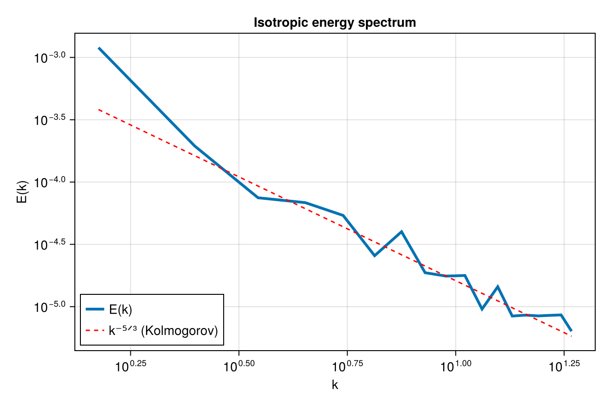
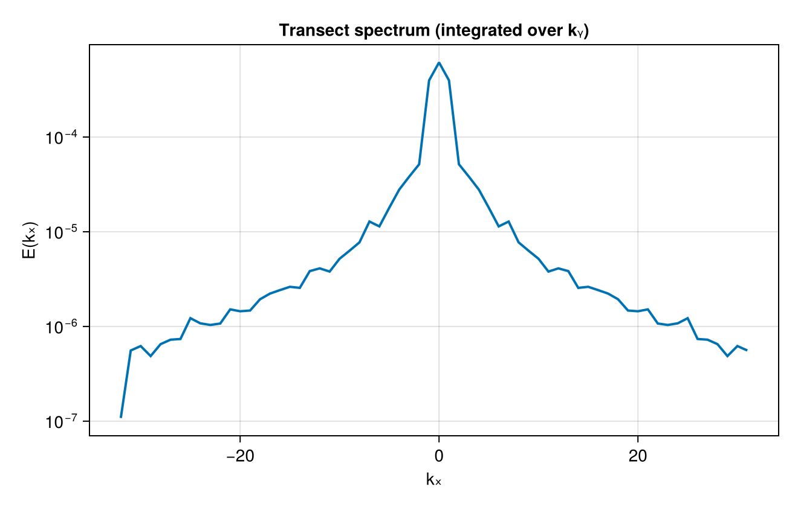
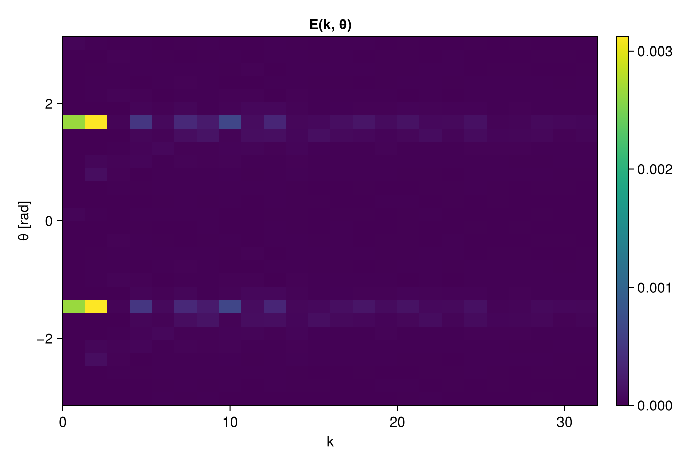
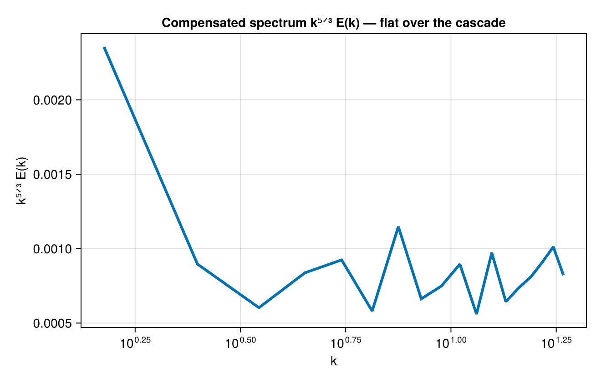
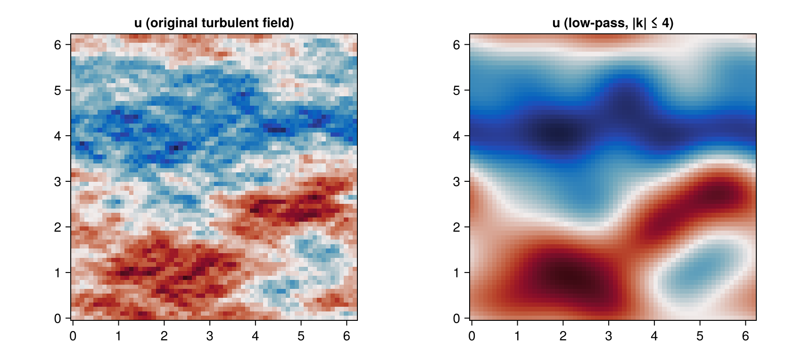

Cartesian spectra (FFT)
A synthetic incompressible turbulent field with a Kolmogorov k⁻⁵ᐟ³ energy cascade, its 2D energy-density map, and the various 1D reductions. The figures below are produced live when the documentation is built.
using FlowFieldSpectra: FlowFieldSpectra as FFS
using FFTW: FFTW # activates the FFTBackend extension
using CairoMakie: CairoMakie as Mke
import Random
L = 2π
N = 64
dx = L / N
xs = range(0.0, stop = L - dx, length = N)
xv = vec([x for x in xs, y in xs])
yv = vec([y for x in xs, y in xs])
# Synthetic turbulence: a broadband streamfunction ψ, then u = ∂ψ/∂y, v = -∂ψ/∂x (spectral
# derivatives), so the velocity is incompressible with an E(k) ∝ k⁻⁵ᐟ³ cascade.
Random.seed!(1)
freq = [0:(N ÷ 2 - 1); -(N ÷ 2):-1] .* (2π / L) # FFTW-order wavenumbers
ψ̂ = FFTW.fft(randn(N, N))
for j in 1:N, i in 1:N
k = hypot(freq[i], freq[j])
ψ̂[i, j] *= k == 0 ? 0.0 : k^(-(11 / 3 + 1) / 2)
end
u = vec(real(FFTW.ifft([im * freq[j] * ψ̂[i, j] for i in 1:N, j in 1:N])))
v = vec(real(FFTW.ifft([-im * freq[i] * ψ̂[i, j] for i in 1:N, j in 1:N])))
grid = FFS.UniformCartesianGrid((xv, yv); domain_size = (L, L))
coeffs, ks = FFS.calculate_spectrum(FFS.FFTBackend(), grid, (u, v), (N, N))Isotropic (radial) energy spectrum
k_bins_iso, E_k = FFS.isotropic_spectrum(ks, coeffs; num_bins = 32)
rng = 2:findlast(<=(0.6 * maximum(k_bins_iso)), k_bins_iso) # resolved inertial range
fig = Mke.Figure(size = (660, 440))
ax = Mke.Axis(fig[1, 1]; title = "Isotropic energy spectrum", xlabel = "k", ylabel = "E(k)",
xscale = log10, yscale = log10)
Mke.lines!(ax, k_bins_iso[rng], E_k[rng]; linewidth = 3, label = "E(k)")
mid = rng[length(rng) ÷ 2]
Mke.lines!(ax, k_bins_iso[rng], E_k[mid] .* (k_bins_iso[rng] ./ k_bins_iso[mid]) .^ (-5 / 3);
color = :red, linestyle = :dash, label = "k⁻⁵ᐟ³ (Kolmogorov)")
Mke.axislegend(ax; position = :lb)
fig
Transect spectrum
Integrate out the second axis to get the 1D (zonal) spectrum along the first. Unlike the isotropic spectrum, this keeps the signed kₓ axis:
k_red, E_red = FFS.transect_spectrum(ks, coeffs, (2,))
fig = Mke.Figure(size = (660, 420))
ax = Mke.Axis(fig[1, 1]; title = "Transect spectrum (integrated over kᵧ)", xlabel = "kₓ",
ylabel = "E(kₓ)", yscale = log10)
Mke.lines!(ax, k_red[1], E_red .+ 1e-20; linewidth = 2)
fig
Anisotropy-resolved spectrum E(k, θ)
isotropic_spectrum averages over direction; anisotropic_spectrum resolves it. We build a directionally biased broadband field (energy stretched toward one axis) so the preferred orientation shows up as a band in the (k, θ) plane.
ĝ = FFTW.fft(randn(N, N))
for j in 1:N, i in 1:N
kk = hypot(3.5 * freq[i], freq[j] / 3.5) # anisotropic weighting
ĝ[i, j] *= kk == 0 ? 0.0 : kk^(-(0.6 + 1) / 2)
end
g = vec(real(FFTW.ifft(ĝ)))
cg, _ = FFS.calculate_spectrum(FFS.FFTBackend(), grid, (g,), (N, N))
k_bins, θ_bins, Ekθ = FFS.anisotropic_spectrum(ks, cg; num_k_bins = 24, num_θ_bins = 28)
fig = Mke.Figure(size = (680, 460))
ax = Mke.Axis(fig[1, 1]; title = "E(k, θ)", xlabel = "k", ylabel = "θ [rad]")
hm = Mke.heatmap!(ax, k_bins, θ_bins, Ekθ; colormap = :viridis)
Mke.Colorbar(fig[1, 2], hm)
fig
Compensated & band-integrated spectra
compensate(k, E, p) forms kᵖ E(k); the k⁵ᐟ³ compensation flattens a Kolmogorov inertial range into a plateau, making the cascade easy to verify. band_energy integrates E(k) over a band.
E_comp = FFS.compensate(k_bins_iso, E_k, 5 / 3)
band = FFS.band_energy(k_bins_iso, E_k, 1.0, 8.0)
@show band
fig = Mke.Figure(size = (660, 420))
ax = Mke.Axis(fig[1, 1]; title = "Compensated spectrum k⁵ᐟ³ E(k) — flat over the cascade",
xlabel = "k", ylabel = "k⁵ᐟ³ E(k)", xscale = log10)
Mke.lines!(ax, k_bins_iso[rng], E_comp[rng]; linewidth = 3)
fig
Synthesis & spectral filtering
synthesize is the inverse transform. Zeroing the high-wavenumber coefficients and synthesizing back gives a low-pass-filtered field — an exact round-trip on a uniform grid.
# Low-pass: keep only |k| ≲ 4 by masking the shifted coefficient grid.
kx, ky = ks
mask = [sqrt(kx[i]^2 + ky[j]^2) <= 4.0 for i in 1:N, j in 1:N]
cfilt = copy(coeffs)
for c in axes(cfilt, 3)
@views cfilt[:, :, c] .*= mask
end
u_lp = FFS.synthesize(grid, cfilt, (N, N))[1]
fig = Mke.Figure(size = (860, 380))
ax1 = Mke.Axis(fig[1, 1]; title = "u (original turbulent field)", aspect = 1)
ax2 = Mke.Axis(fig[1, 2]; title = "u (low-pass, |k| ≤ 4)", aspect = 1)
Mke.heatmap!(ax1, xs, xs, reshape(u, N, N); colormap = :balance)
Mke.heatmap!(ax2, xs, xs, reshape(real.(u_lp), N, N); colormap = :balance)
fig